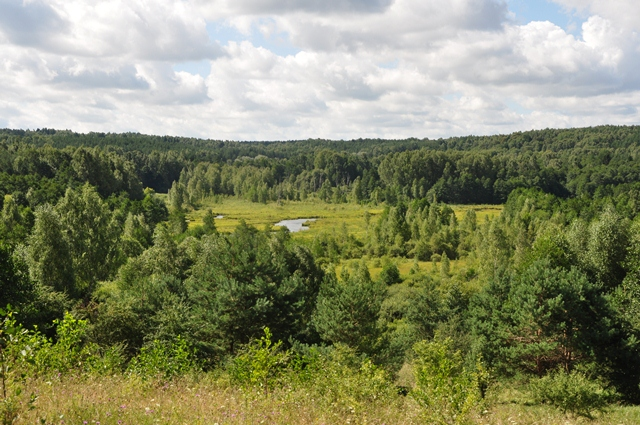
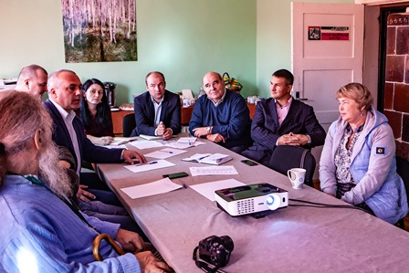
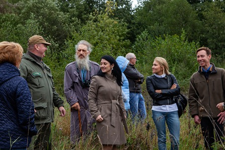

Встреча
Смотровая площадка по дороге к чуду

Проект был поддержан Фондом президентских грантов в 2018 году

26 сентября 2018 года в Виштынецком экомузее состоялась организационная встреча по проекту «Неизвестный Виштынец или по дороге к чуду». Его главная цель – содействие сохранению одного из самых значимых и известных памятников природы Калининградской области - «Озеро Виштынецкое».
Участниками встречи стали не только партнёры музея, но также представители администраций местных муниципалитетов и других заинтересованных сторон. Были представлены планы по реализации проекта и основным мероприятиям, направленным на создание информационно-просветительского комплекса в посёлке Краснолесье на пути к Виштынецкому озеру. В их числе – создание смотровой площадки, которая знакомила бы посетителей с ландшафтом Виштынецкой возвышенности, особенностями его формирования и образования самого озера, а также с правилами поведения в природе.
Площадку планируется создать на окраине посёлка Краснолесье над живописной долиной истоков реки Синей, где открывается вид на холмы, покрытые лесом, заболоченную низину с лентой реки. Эта уникальная часть ландшафта Виштынецкой возвышенности, где перепады высот достигают более 50 метров, уже является излюбленным местом, как местных жителей, так и гостей Краснолесья. Смотровая площадка станет не только важным компонентом просветительского комплекса на пути к Виштынецкому озеру, но и привлекательным объектом туристической инфраструктуры на юго-востоке области. Все участники встречи, отметив важность реализации проекта, выразили свою поддержку, а также посетили место сооружения будущей смотровой площадки и обсудили необходимые дальнейшие действия для её создания. Предстоит большая и интересная работа, результат которой будет способствовать не только сохранению уникального озера на границе России и Литвы, но также и социально-экономическому развитию территории Роминтской пущи и природного парка «Виштынецкий».
Мы благодарим всех партнёров музея: Министерство природных ресурсов и экологии Калининградской области (Департамент лесного хозяйства и использования животного мира, региональный природный парк «Виштынецкий»), Отдел культуры Администрации МО «Нестеровский район», КРОО «Экоцентр «РОМИНТА»», Автономное учреждение Калининградской области «Экологический центр «ЕКАТ-Калининград», а также Администрацию МО «Нестеровский городской округ», Администрацию МО «Чистопрудненское сельское поселение», ГКУ «Управление дорожного хозяйства Калининградской области» и лично каждого участника за поддержку проекта и участие в мероприятии.



На встрече присутствовали заместитель министра - начальник департамента лесного хозяйства и использования животного мира Калининградской области Л.Г. Поплавская, начальник Отдела особо охраняемых территорий регионального Министерства природных ресурсов и экологии А.В. Орлов, глава администрации МО «Нестеровский район» Э.В. Старков, глава МО «Нестеровский городской округ» В.В. Судиян, начальник Отдела культуры администрации Нестеровского района И.Н. Опрышко, глава МО «Чистопрудненское сельское поселение» И.А. Конашенкова, специалист по связям с общественностью Нестеровского района Я.А. Лян, представители природного парка «Виштынецкий» А.К. Самерханова, Р.Р. Кадремятов, Н.Д. Кулясов, начальник аналитического отдела Экологического центра ЕКАТ-Калининград А.И. Акинин, председатель Общественной организации «Экоцентр «Роминта» А.В. Самсонкин, Яромир Краевский, директор ландшафтного парка Пущи Роминской (Польша), а также представитель Управления дорожного хозяйства Калининградской области Н.Ю. Берберова.
Фото: Юлия Алексеева, Александр Самсонкин
26 сентября 2018 г.